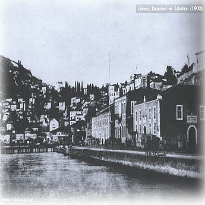
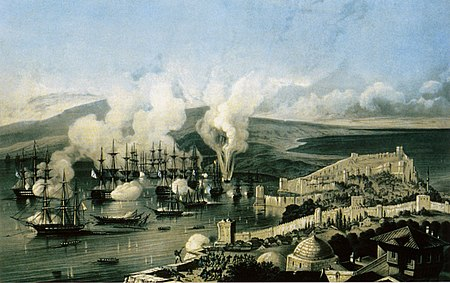

Antik çağdan beri parlak ve yoğun bir ticari ve kültürel yaşantıya sahip olan Sinop, bu niteliğini Doğu Roma İmparatorluğu, Büyük Selçuklu İmparatorluğu, Candaroğulları ve Osmanlı İmparatorluğu yönetimlerinde de sürdürmüş, ayrıca kale ve tersanesi ile bölgenin en önemli askeri üslerinden biri olmuştur. Bu durumunu Sinop Baskını'ndan sonra kaybetmeye başlayan kent, sur dışına güneydoğu yönde azınlık yerleşmeleri ile batıya doğru ise yönetim ve eğitim gibi kamu hizmetleri yerleşmesiyle çıkmıştır.
Sinop ilinin yerleşme tarihi ilk Tunç Çağı'yla başlamıştır. MÖ 7. yüzyılda bir Helen Kolonisi olarak kurulan Sinop, Antik Çağ'da Karadeniz'in en önemli kentiydi. Helenistik dönemde Anadolu'nun yerli kültürleriyle, Helenistik ve Pers kültürlerini birleştirmek isteyen Pontus Devleti'nin başkenti Amasya'dan sonra Sinop'a taşındı. Bizans döneminde yöre Ortodoks Hristiyanlığının etkisiyle dilde ve kültürde Helenleşmiştir.
Sinop 1972 yılında kalkınmada ikinci derece öncelikli iller kapsamına alınmıştır. İlk büyük ölçekli sanayi kuruluşu, Ayancık Kereste Fabrikasıdır. Diğer önemli sanayi kuruluşları Şişe Cam Fabrikası, Un Sanayi, Söksa, İç Çamaşırı Örme Ve Konfeksiyon AŞ. ile toprak sanayinde tuğla ve kiremit fabrikalarıdır. Ne yazık ki şu an bu fabrikaların çoğu kapatılmış ya da taşınmış durumdadır. Ama bunun dışında Sinop'ta el sanatları da ünlüdür. Ayancık keteni, Boyabat çember dokumacılığı, ahşap kotra maketi yapımı ve tahta el işlemeciliği Sinop'taki en köklü el sanatlarıdır.
Selçuklu idaresine geçtikten sonra baştan başa yeniden imar edilen Sinop'ta, önce Pervaneoğulları Beyliği daha sonra Candaroğulları Türk egemenliğini sürdürmüştür.
15. yüzyılda gelişmeye ve büyümeye başlayan Osmanlı İmparatorluğu'na Anadolu beylikleri katılmaya başlayınca Candaroğlu İsmail Bey'de Osmanlılara bağlılığını ilan etmiş ve böylece Sinop, Osmanlı İmparatorluğu'nun idaresi altına girmiştir.
Bir liman şehri olarak kullanılan Sinop'ta tersanede gemi yapımı bu dönemde de devam etmiştir.
1853 Osmanlı-Rus savaşlarında şehir top atışlarına tutularak yakılmış ve bu tarihten sonra, şehir iyice küçülerek kale içine çekilmiştir.
Bandırma Vapuru ile Samsun'a gitmek üzere yola çıkan Mustafa Kemal Atatürk 18 Mayıs 1919 günü Anadolu'ya karadan geçmek için Sinop Limanına uğramış, ancak o tarihte Sinop-Samsun arasında karayolu olmaması sebebiyle yolculuğuna gemiyle devam etmiştir.
Hatta Sinop'u çok sevdiğini belirten Atatürk bu hislerini "Ne olurdu Sinop'un yarı güzelliği Ankara'da olsa idi" ifadesiyle belirtmiştir.
Sinop idari teşkilat olarak merkezi Samsun olan, Canik Livasına bağlanmış, Tanzimat'ın ilanından sonra Kastamonu'ya sancak olmuş, 1924 yılında Kastamonu'dan ayrılarak il haline getirilmiştir.

